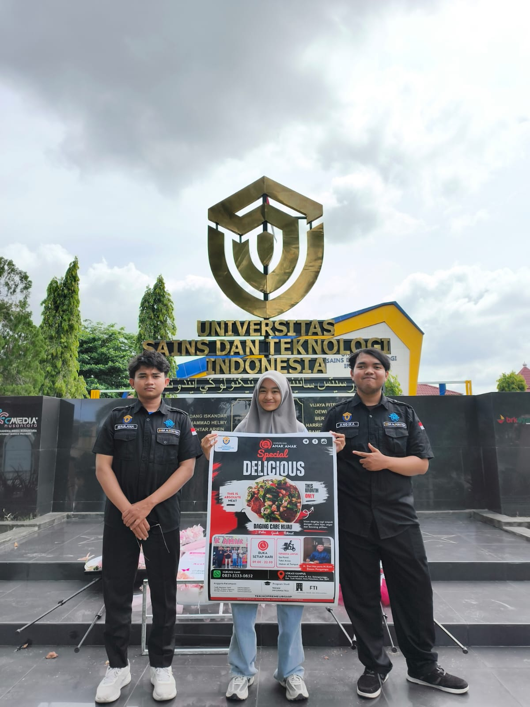
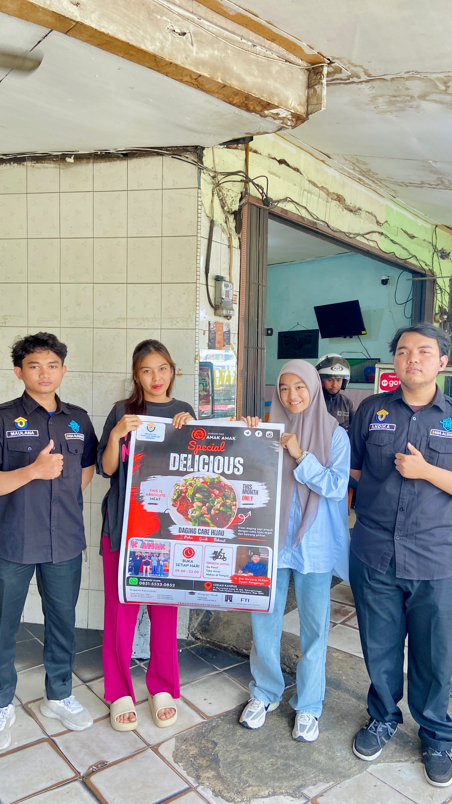

Dalam rangka memenuhi proyek implementasi nyata bagi masyarakat, kelompok kami merancang dan mengembangkan produk fungsional ramah lingkungan yang dipadukan dengan strategi *branding* visual yang kuat melalui poster promosi digital dan konsep media video marketing yang energik.
1. Eksplorasi Produk: Tote Bag Non-Woven "AA"
Produk utama yang dikembangkan adalah **Tote Bag ramah lingkungan** berbahan dasar kain *non-woven* berkualitas tinggi berwarna putih bersih. Desain diperkuat dengan penempatan logo eksklusif **"AA"** di bagian tengah tas untuk membangun identitas produk (*branding*) yang minimalis namun ikonik.
Kelebihan & Fungsionalitas Produk:
- Kapasitas Optimal: Dirancang khusus dengan kompartemen yang efisien untuk membawa berbagai perlengkapan harian, termasuk tempat khusus wadah kotak makan atau alat makan secara aman.
- Opsi Kustomisasi Luas: Produk ini mendukung variasi kustomisasi desain sesuai dengan preferensi target pasar maupun kolaborasi mitra eksternal.
- Daya Tahan Tinggi & Eco-Friendly: Alternatif terbaik pengganti plastik sekali pakai yang dapat dicuci kembali, kuat, serta ramah lingkungan.
2. Media Informasi & Poster Resmi
Untuk mengenalkan produk ini secara luas, kami menyusun materi publikasi kreatif berupa cetakan **Poster Resmi** serta rancangan video promosi berdurasi 15-20 detik. Pendekatan visual yang digunakan berfokus pada estetika modern, bersih, dengan menyisipkan aksen latar belakang tekstur alami dan grafis dinamis agar menarik minat generasi muda.

Poster Resmi Promosi Digital "Warung Nasi Anak Amak"
Teknopreneurship • Universitas Sains dan Teknologi Indonesia
3. Dokumentasi Penyerahan Proyek Lapangan
Sebagai bentuk validasi dan akuntabilitas dari pelaksanaan perkuliahan Teknopreneurship, berikut adalah bukti dokumentasi nyata pengerjaan proyek serta penyerahan hasil luaran publikasi berupa media promosi cetak kepada mitra UMKM:

Dokumentasi Tim Kelompok di Kampus
Sesi foto bersama Fadil Maulana, Bunga S A Gari, dan Andika Wahyu di depan tugu Universitas Sains dan Teknologi Indonesia setelah penyelesaian desain produk.

Penyerahan Poster Promosi kepada Pengelola Mitra
Proses implementasi lapangan berupa penyerahan cetak fisik poster menu promosi digital secara langsung bersama tim pengelola di outlet Warung Nasi Anak Amak.
4. Publikasi Konten & Kampanye Media Sosial
Dukung dan lihat luaran publikasi kreatif, rilis video promosi interaktif, serta liputan aktivitas lapangan tim kami melalui tautan platform sosial media resmi proyek di bawah ini: